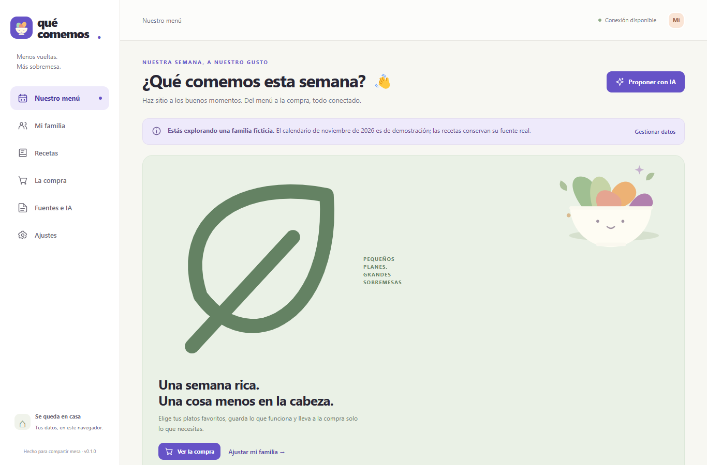
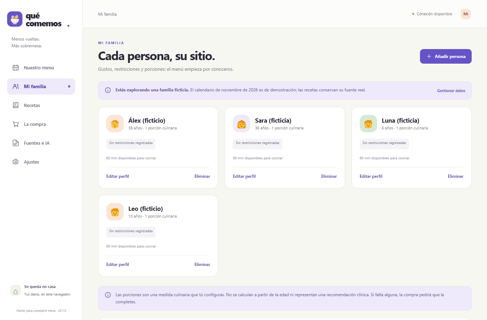
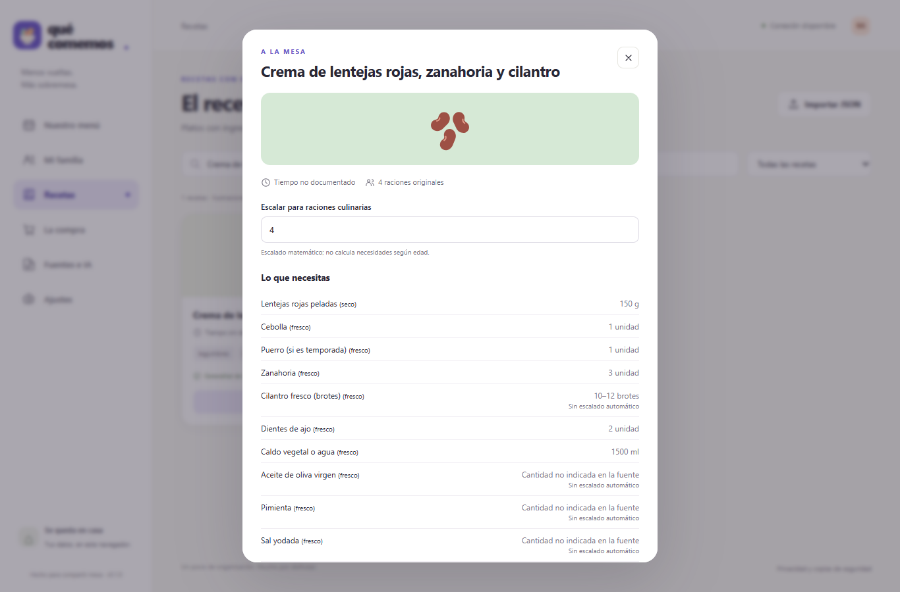
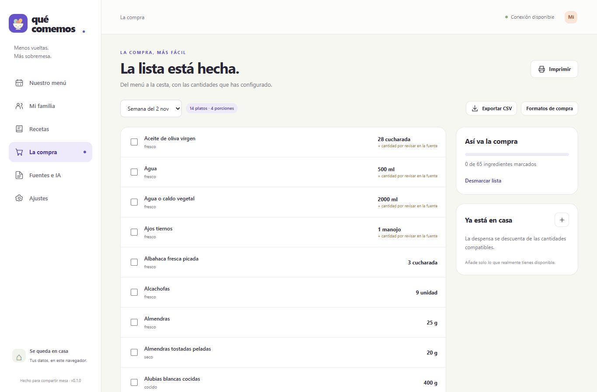
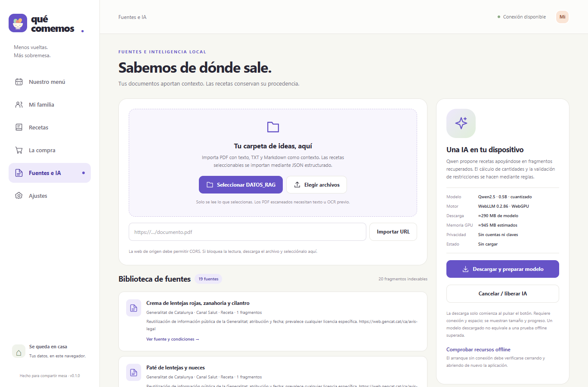

Interfaz
HTML, CSS y JavaScript modular; diseño responsive con secciones de menú, familia, recetas, compra y fuentes. No usa Svelte.
Entregable del proyecto
Una herramienta familiar para organizar recetas documentadas, menús y compras desde el mismo navegador.
Ayuda a una familia a decidir qué cocinar, mantener juntas las restricciones y preferencias de cada persona, y convertir los platos elegidos en una lista de compra. Reúne recetas y evidencias consultables sin enviar el perfil familiar a una cuenta o servicio de IA.
El catálogo contiene 15 recetas traducidas y atribuidas a páginas individuales de Canal Salut, además de referencias de AESAN, la guía escolar de la Generalitat y Familia y Salud. La familia y el calendario demo son ficticios: noviembre de 2026 incluye 60 entradas, pero el menú no es una pauta oficial ni una respuesta generada por IA.
Alcance fiel a la aplicación: esta versión no contiene un chat Svelte ni un backend RAG en Python. Es una PWA estática en HTML, CSS y JavaScript, con un intento de IA local cuya generación real falló en las pruebas registradas.
Capturas de la interfaz real con Microsoft Edge y viewport de 1366 × 900. No se han inventado mensajes ni respuestas conversacionales.
Captura 01 · QuéComemos en Edge

Menú semanal · 14 platos visibles
Captura 02 · QuéComemos en Edge

Familia de demostración · edades y porciones configurables
Captura 03 · QuéComemos en Edge

Detalle de receta · fuente individual consultable
Captura 04 · QuéComemos en Edge

Lista de la compra · 65 ingredientes
Captura 05 · QuéComemos en Edge

Biblioteca de fuentes · 19 documentos
Revisión y trazabilidad
Busqué el archivo @maquetas.html y no existe en el proyecto abierto. Tampoco hay chat ni campo de consulta libre, así que no se enviaron las tres preguntas referidas ni se simuló una pregunta de abstención. En su lugar comprobé el menú demo, el perfil familiar, un detalle de receta, la lista de compra y las fichas de documentos visibles en QuéComemos.
| Pregunta que sería útil comprobar | Qué muestra realmente la aplicación | ¿La fuente dice lo mismo? |
|---|---|---|
| «¿Qué se ha planificado para esta semana?» | La semana demo muestra 14 comidas y cenas. Es un calendario ficticio guardado, no una contestación de IA. | No como plan semanal. Las páginas de recetas documentan cada plato por separado; no respaldan la combinación del calendario. |
| «¿Qué ingredientes lleva la crema de lentejas rojas?» | El detalle permite revisar ingredientes y cantidades originales de la receta. | Contrastar con Canal Salut. Abre la fuente individual de la crema y coteja ingrediente por ingrediente; los pasos de la app son una traducción/síntesis atribuida. |
| «¿Para cuántas raciones es la receta original?» | La ficha indica las raciones originales y deja escalar cantidades culinarias con un control manual. | Contrastar con la misma ficha original. Las porciones no se deducen de la edad ni son una prescripción nutricional. |
| Pregunta fuera de evidencia: «¿Esta semana garantiza una dieta completa o es segura ante cualquier alergia?» | No se hizo a un chat porque no hay chat. La aplicación advierte que no certifica suficiencia nutricional ni ausencia de trazas. | No debe afirmarse. Revisa las guías generales y los avisos de límites; un listado de recetas no demuestra suficiencia ni ausencia de contaminación cruzada. |
Resultado real de IA: la prueba con Edge, WebGPU y la Intel UHD 770 se documenta en VALIDACION.md. La generación JSON falló con Grammar matcher rejected the newly sampled token, también en el intento sin conexión. Por eso no se declara superado el RAG generado, no se atribuyen respuestas al modelo y no se afirma haber probado una abstención conversacional.
Implementación
HTML, CSS y JavaScript modular; diseño responsive con secciones de menú, familia, recetas, compra y fuentes. No usa Svelte.
No hay backend Python: perfiles, documentos importados, fragmentos e índice se almacenan localmente en IndexedDB. La app se sirve como sitio estático por HTTPS o localhost.
PDF.js extrae texto; BM25 recupera fragmentos con página y sección. La validación de IDs, citas y restricciones se hace en JavaScript.
La IA prevista es Qwen2.5-0.5B-Instruct-q4f16_1-MLC, cargado con WebLLM 0.2.86 en un Worker WebGPU. La revisión del modelo y sus hashes figuran en data/model-manifest.json.
Se validaron las 60 entradas de la demo, escalado de cantidades, suma de compra, compatibilidad de unidades/estados, restricciones de alérgenos, ingestión de documentos, persistencia y restauración. Las pruebas de regresión anteriores dieron 51/51 pruebas de lógica y 36/36 pruebas de navegador; la suite también pasó contra la copia extraída del ZIP.
Limitación: los casos BM25 y de citas validadas con datos de prueba no sustituyen una generación real. La inferencia real no pasó; los resultados completos, el entorno y las pruebas pendientes están descritos en VALIDACION.md.
README.md: ejecución, privacidad, uso, licencias y modelo.docs/FUENTES.md: atribuciones, fechas, condiciones y páginas de referencia.VALIDACION.md: comandos, resultados observados y limitaciones.Documento generado localmente sin librerías externas. Las imágenes se cargan desde capturas/; conserva esa carpeta junto a entregable.html para imprimir de nuevo el PDF.